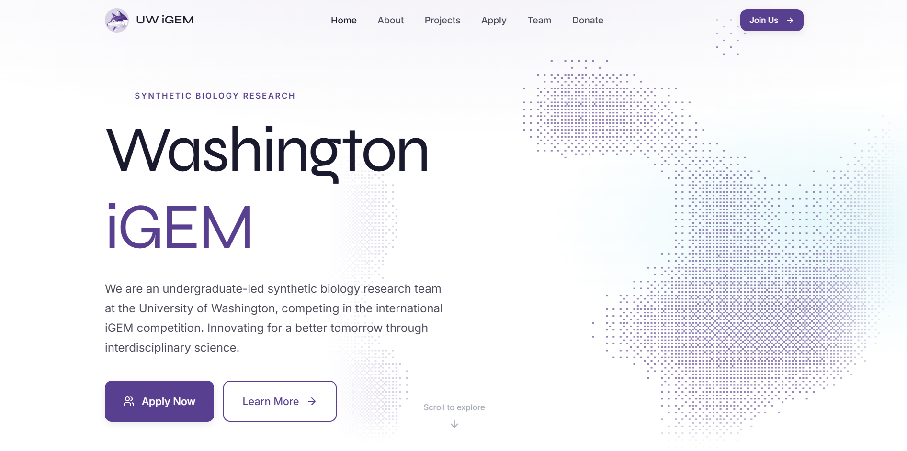
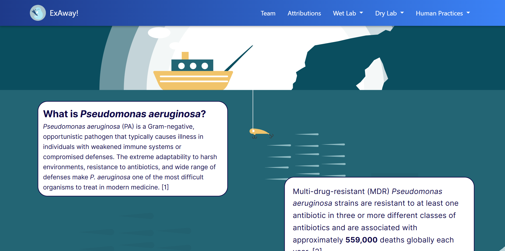

Washington iGEM
Lead Web Development • University of Washington iGEM

As the Web Development Subteam Lead for the University of Washington iGEM team, I design and build the team’s digital presence. My work focuses on translating complex synthetic biology research into clear, accessible digital experiences for judges, researchers, and prospective members.
Project Overview
Web Development Subteam Lead
Scientific communication, web design, front-end development
2025 – Present
HTML, CSS, JavaScript
The International Genetically Engineered Machine (iGEM) competition is a global synthetic biology competition where university teams design biological systems to solve real-world problems and present their research at the annual Grand Jamboree.
The University of Washington iGEM team conducts research in synthetic biology, focusing on complex protein design and antibiotic resistance. My role is to ensure that our research can be clearly communicated through well-designed digital platforms.
The Challenge
Synthetic biology research is highly technical, making it difficult to communicate clearly to audiences outside the field. The iGEM competition requires teams to document their entire research process through a public competition wiki and website, which judges use to evaluate projects.
This creates several design challenges:
- Organizing complex research into clear, navigable pages
- Presenting technical information in an accessible way
- Ensuring the site structure allows judges to quickly evaluate our work
- Creating documentation that future teams can maintain and build upon
Main Team Website

The 2026 WebDev team redesigned and updated the Washington iGEM team website to better communicate the team's research, structure, and recruitment opportunities.
The redesign focused on improving navigation, strengthening visual hierarchy, and organizing information so visitors could quickly understand what the team does and how to get involved.
The site was developed using HTML, CSS, and JavaScript skills we aimed to improve for our upcoming wiki. We structured the codebase to make the site maintainable so that future teams can easily update content.
2025 Competition Wiki

For the 2025 iGEM project, I initially joined the design team but later stepped into a leadership role when the web development lead unexpectedly left the team.
I led a small team of developers responsible for building the entire competition wiki, which documents our research process, experimental work, and project development for evaluation by judges.
The wiki required organizing large amounts of technical information into a clear narrative structure. I worked closely with wet lab and modeling teams to ensure their work was accurately represented while still being understandable to readers outside their specific domain.
Our project ultimately earned a Silver Medal at the iGEM Grand Jamboree.
Tools & Skills
- Front-end development (HTML, CSS, JavaScript)
- Website architecture and navigation design
- Scientific communication
- Cross-team collaboration with researchers
- Version control and development in VS Code
Outcome
The final website and competition wiki helped clearly communicate the team's research to judges and the broader public. By organizing complex experimental work into a structured digital narrative, the platform made it easier for readers to understand our project's goals, methods, and impact.
The project strengthened my skills in both front-end development and human-centered design, particularly in translating complex technical information into accessible digital experiences.